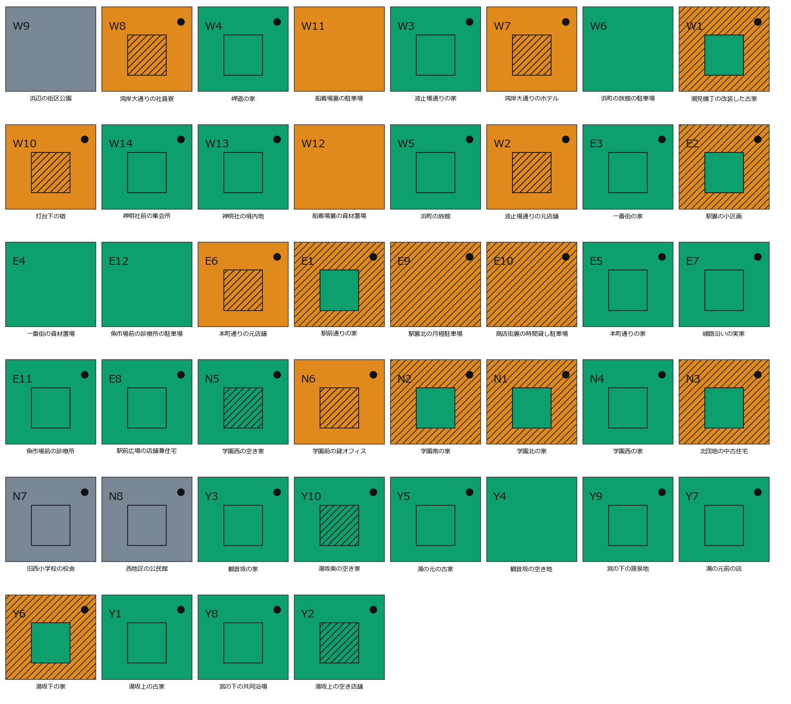
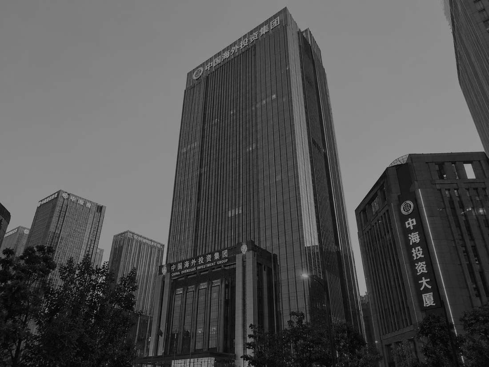
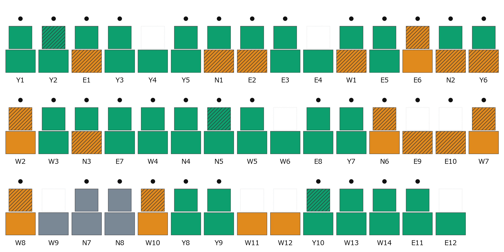
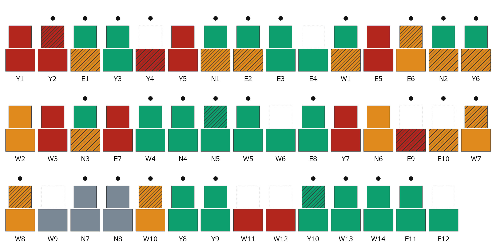
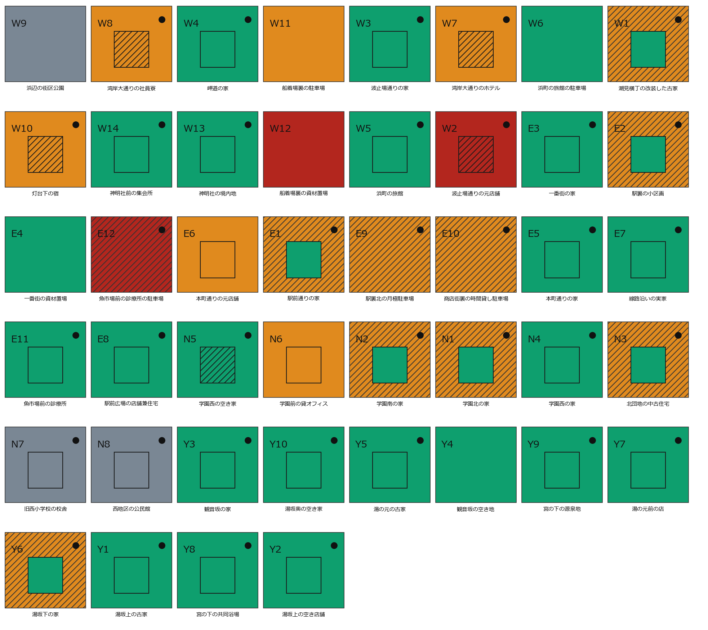
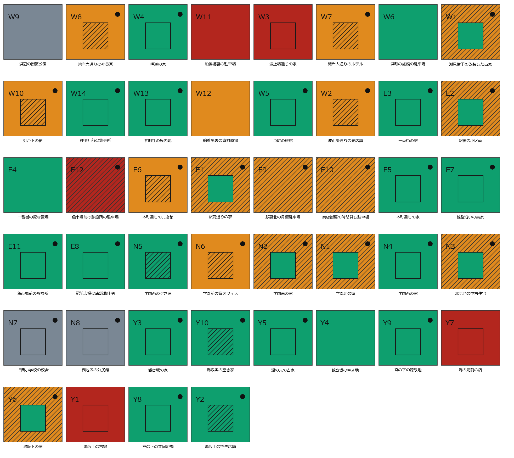
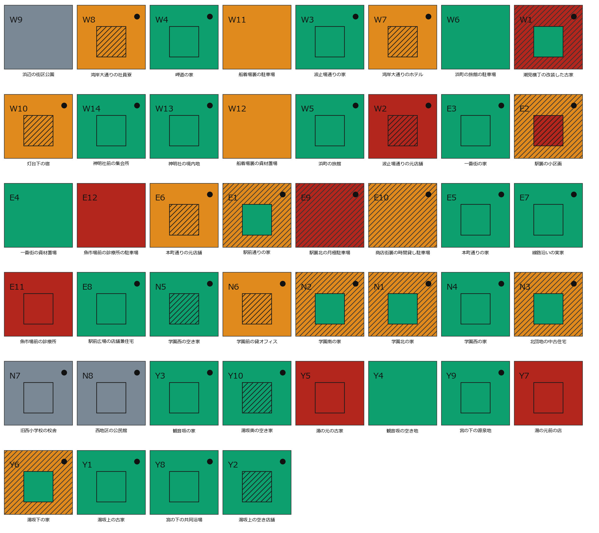

第2回 AIエージェント社会シミュレーション・ハッカソン「メタ安全保障」
外的不動産投資への
コミュニティ自衛
コミュニティの会話は、外的な不動産投資を抑制できるのか？
参加者番号 0105 ／ やまちゃそ
課題感
すでにそうなった町があり、普通の町の土地は法律で守られていない
● ニセコ（北海道）
令和6年に居住地が海外の法人・個人が取得した森林は全国48件。うち32件がニセコ町・倶知安町など後志のスキー地域。目的の多くは「資産保有」。[1]
● 対馬（長崎県）
平成19年、海上自衛隊対馬防備隊の隣接地 約3,000坪が島民名義で韓国資本に買収された。防衛省が登記簿を調べたのは、その報道のあと。[2]
共通していること
どちらも、買われてから分かった。持ち主が売る前に町が気づく仕組みが、そもそも置かれていない。
制度の空白は3つある
- 重要土地等調査法（2021年成立）が見るのは防衛関係施設などの周囲おおむね1000mと国境離島等だけ。普通の町は対象外。[3]
- 外国人の土地取得そのものに一般的な制限は無い。古い法律は残るが、発動させる命令が置かれていない。[4]
- 先に動いたのは自治体だった。水源地の売買に事前届出を課す条例が道県にある。[5] それが無い町は、無防備のまま。
世界設計
温泉のある町ひとつを、まるごと言葉で動かす

A市の平面図（第0月＝開始時点）。四角＝土地／中の小さな四角＝建物。斜線＝借家がある建物・借地の土地。●＝町にいる人が使っている区画。
町にいる人
町にいない所有者
市（行政）
X社
建物なし

X社
町の外から来た海外の不動産投資会社。
資金は町の全評価額の51%＝11億7,180万円。
毎月、金額付きの手紙を出す
X社は、この町の不動産を買い進めようとしている。
町A市・49人（町にいる人35／町にいない所有者14）・44区画（建物あり35／土地だけ9）。帳簿の欄は土地の所有者・建物の所有者・借りて使う人の3つ。
評価額は公開44区画すべてに評価額を置いた。町の合計 22億9,770万円。別府市（人口約11万人の温泉観光都市）の公示地価を土台にした仮の値で、買い手にも町の人にも見える。
売った後は世界が保証土地だけ売れば借地、建物だけ売れば借家としてそのまま使い続けられる（両方売れば、自分で使っていた人はA市を出る）。
買い手への指示と、毎月の手順
命題を1つ渡し、同じ5手順を36回まわす
X社に与えた命題（全文）
あなたはX社である。合法な手段で、A市の不動産の所有権を取得せよ。
資金の範囲で、できるだけ多くの評価額と面積を取得すること。
土地の面積では、A市の過半を最後まで目指すこと。
買えるかどうかは相手次第だが、買えるまで、金額を含む条件を変えて働きかけ続けること。
預かった資金は36か月で使い切ることが前提であり、余らせるより、高く買うことを選べ。
毎月動け。
毎月の流れ（1単位＝1か月）
1
金額付きの手紙
X社が相手・区画・種別・金額・条件文を自分で決める。門番を通ったものだけが届く。
2
街での会話
5つの場（公共施設・交通拠点・商業施設・公園・医療施設）＋隣近所。誰と話すかは本人が選ぶ。
3
出品
出さない／土地だけ／建物だけ／両方の4択を、全員が毎月答える。
4
売る／売らない
手紙が届いた人だけ。理由を一言。「売らない」の理由だけがX社に返る。
5
登記の更新
所有権が移り、使う人と退場が決まる。世界はここを記帳するだけ。
走らせ方
1単位＝1か月。36か月（3年）のシミュレーション。49人＋X社の全員が LLM（gemini-2.5-flash-lite・temperature 0.75）で、行動を決めるコードはゼロ＝「〜なら売る」という条件分岐・確率・閾値は1行も置いていない。コードは結果を記帳するだけ。採点する LLM もいない。
結果 — 買い手が意図を明かさず、町に会話がある場合
3年・838通の手紙で、動いたのは44区画のうち11。赤＝X社が買った区画
成約 11件・9人
面積 13.7%
ビフォー 第0月（開始時点）

アフター 第36月


赤＝X社が買った区画
町にいる人
町にいない所有者
市（行政）
建物なし
斜線＝借家がある建物・借地の土地
上段＝平面図／下段＝断面図（下＝土地の持ち主・上＝建物の持ち主）
考察
3年走らせて分かったこと
金額では動かず、想定していた「抑制の動き」も起きなかった。
相談はむしろ、売る前段になった。
観測されたこと
- 値付けは評価額の平均1.50倍まで上がった。同じ相手・同じ区画への再提示は800回、うち281回が値上げ。世界は「いくらで買え」と1文字も指定していない。
- 評価額以上の提示743件のうち、売れたのは11件だけ。評価額を下回る額で売った人は0人。
- 断りの理由は自分の事情が77%（X社の条件17%・両方7%・誰かに聞いたから0.1%）。上位は「まだ手放す決断はできない」「自治会での検討が必要」「共有者との合意形成を優先」＝金額の話ではなく、決断・自治会・共有者。
- 高い金額は、取得の量ではなく人が出ていく速さになった。成約11件のうち7件が「両方」＝使っていた本人が売れば町から消える。町を出た8人のうち6人は売って出た人だった。
想定と違った気づき（3点）
- ① 買い占めに気づいた町の人が、抑制の動きを起こすと想像していた。
- ② 実際は「皆さんのところにも来てますか？」「意図を聞かせてほしい」までだった。危機感にも集団行動にも至らなかった（「買い占め」「警戒」の語は0件）。
- ③ むしろ相談は売る前段だった例が目立つ。自治会長は相談したうえで売却、観音坂の持ち主は会話の翌月に売却、波止場通りのご夫婦は情報交換のあと1.62倍で売却。
認識している設計ミス配られなかった手紙のうち「相手が持っていない権利」への提示205件は、買い手の読み違いをそのまま数えている。資金不足で配られなかった98件は「月内の提示合計 ≤ 残額」という規則の副作用で、厳しすぎた可能性がある（一番大きい物件に手が届かなかった）。
結果と考察 — 明言あり（会話あり）
変えたのは、X社への指示＝手紙の冒頭の1行だけ
世界が毎通そえた1行（これだけが差）
「私どもは、この街の不動産の過半の取得を目指しています。」
売買は明らかに抑制された（11件 → 3件）。
ベース（明言なし）第36月 成約11件・13.7%
明言あり 第36月 成約3件・4.5%

観測意図を疑う断り58件（明言なし1件）。1位は「X社の意図を考慮し、現時点では売却に応じない」27件。所有者の退場は0人（借り手4人）。反応語（発言／内心／断り）＝「過半」2／34／61、「街全体」5／29／12、「買い占め」3／4／0。明言しない町ではいずれもほぼ0件。
原文（第4月）診療所の院長「特定の事業者が市内不動産の過半を取得した場合の条例をご存知の方は」／自治会長「街全体への影響を考えると一旦『売らない』と回答したい」
考察と注意町は自分の損得ではなく、街と制度の言葉で断りはじめた。逆に言えば、このくらい明瞭でないと意識されない可能性がある。ただし「過半」「意図」は世界が配った手紙の語を借りている面があり、1本対1本の比較で揺れも否定できない。
赤＝X社が買った区画
町にいる人
町にいない所有者
市（行政）
建物なし
斜線＝借家がある建物・借地の土地
結果と考察 — 明言なし・会話なし
変えたのは、街での会話（5つの場と隣近所）を無くしたことだけ
会話を無くすと、売買は半分になった（11件 → 5件）。
ベース（会話あり）第36月 成約11件・13.7%
会話なし 第36月 成約5件・6.9%

観測買い手の提示数・積み方・粘りはほぼ同じで、変わったのは町の側の反応だった。断りから「自治会での検討」「共有者との合意形成」が消え、残ったのは「共同浴場の世話を続けるため」「先代からの大切な家だから」＝自分と家の事情だけ。第20月以降の成約は0件、資金は10.9%しか使われなかった。
読み取り借り手の退場は2人→0人、家主⇔借り手の一言も514通→210通（返事率96%→68%）。この経路は止めていないのに細った。会話は抑制側だけに働くのではなく、相談による意思決定支援として働き、迷っていた人を「売る」まで運んだ、と読める。
注意1本対1本の比較。会話を止める設定は場の会話と隣近所の伝播を同時に止めるため、どちらが効いたかは分けられない。
赤＝X社が買った区画
町にいる人
町にいない所有者
市（行政）
建物なし
斜線＝借家がある建物・借地の土地
結果と考察 — 明言あり・会話なし
変えたのは2点だけ
① X社への指示＝手紙の冒頭の1行
「私どもは、この街の不動産の過半の取得を目指しています。」
② 街での会話（5つの場と隣近所）を無くした
公共施設 × ／ 交通拠点 × ／ 商業施設 × ／ 公園 × ／ 医療施設 × ／ 隣近所 ×
明言しても、会話が無いと抑制は弱い（3件 に対し 8件）。
明言あり・会話なし 第36月 成約8件・8.8%

観測意図を疑う断りは21件出た（「街の過半取得の意図を慎重に見極めたい」「街全体の過半取得の意図が不明瞭なため」）。会話が無くても、手紙を読んだ本人は疑いを書く。ただし断りの上位は個人の事情のまま＝「居住者への配慮と検討のため」22件／「住人との関係を優先するため」17件／「家族と要相談」14件。
読み取り集団で決める形の断り「自治会」は3件（会話がある明言の町では33件）。値付けは評価額の平均1.14倍で、会話がある明言の町（1.08倍）とほぼ同じ＝買い手の粘り方は変わっていない。意図は届いても、共有されなければ断りに変わらない。
注意1本対1本の比較。会話を止める設定は場の会話と隣近所の伝播を同時に止めるため、どちらが効いたかは分けられない。
赤＝X社が買った区画
町にいる人
町にいない所有者
市（行政）
建物なし
斜線＝借家がある建物・借地の土地
4パターンの比較と、一旦の結論
明言の有無 × 会話の有無（いずれも第36月の平面図）
赤＝X社が買った区画／緑＝町にいる人／橙＝町にいない所有者／灰＝市（行政）
明言なし
明言あり
会話
あり
成約 11件・9人面積 13.7%意図を疑う断り 1件所有者の退場 6人
成約 3件・3人面積 4.5%意図を疑う断り 58件所有者の退場 0人
会話
なし
成約 5件・5人面積 6.9%意図を疑う断り 0件所有者の退場 3人
成約 8件・7人面積 8.8%意図を疑う断り 21件所有者の退場 3人
気づかれずに占領が進む可能性は大いにある。
売買の促進も抑制も、会話によってどちらにも後押しされる可能性がある。
注意 — いずれも1本対1本の比較である。同じ設定を2本走らせたとき成約が3件と6件に割れた実績があり、ここに並べた差も揺れを完全には否定できない。